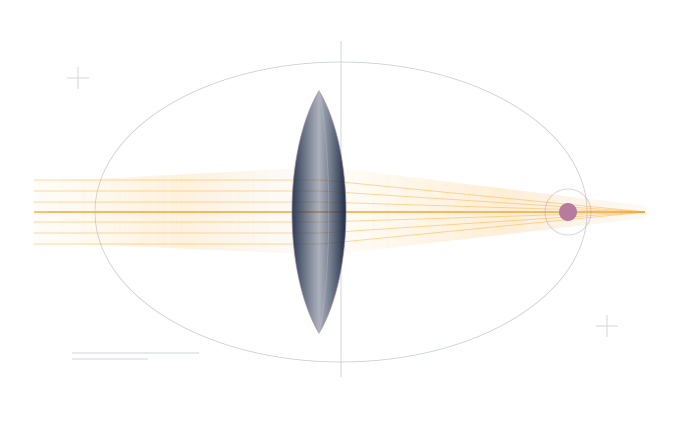

Свет как инструментОптика и фотоника
Исследовать свет.
Увидеть возможности.
Оптические системы, квантовые технологии и методы измерения параметров света.
- Оптические системы
- Квантовые технологии
- Измерение параметров света